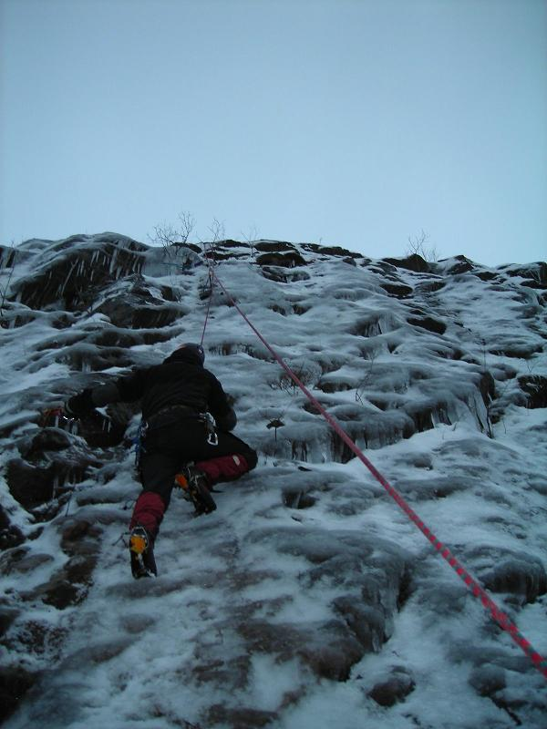

2 mil från Karlstad i riktning mot Arvika. Alldeles intill riksväg 61 i höjd med Kil/Fagerås.
Något svaig is. Bygger också något långsamt och försvinner ganska fort vid varmare grader. Klättrad mest pga sin närhet till Karlstad och enkla access. Snarare så att bilarna som går alldeles förbi stör? Parkera på rastplats intill och gå hundra(?) meter till klippan. Oklart om viltstängslet i toppen på sprängklippan kan fungera som säkringspunkt för toppankare. Svårt lägga egna säkringar och ibland kan isen vara något tunn. Se bild.
Sprängklippan uppdelad på två delar. Bilden nedan är från den vänstra.
<googlemap version="0.9" lat="59.427617" lon="13.308563" type="map" zoom="10"> 59.505906, 13.240522, Kilfallet </googlemap>
Kategori:Värmland